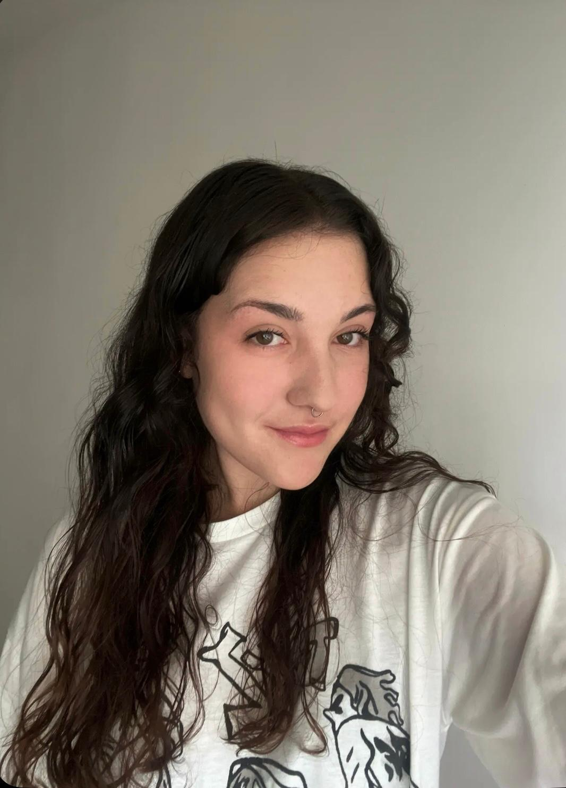

Proyectos audiovisuales y fotografía
¡Hola! Soy Alicia Urquízar Rodríguez, una creadora audiovisual con pasión por la fotografía y el vídeo. Estudié el Grado en Comunicación Audiovisual en la Universidad de Granada (2021-2025), y actualmente sigo formándome gracias al Máster Universitario en Nuevos Medios Interactivos y Periodismo Multimedia. En este portfolio encontrarás algunos de mis proyectos más destacados.
Puedes contactar conmigo a través de los siguientes enlaces: